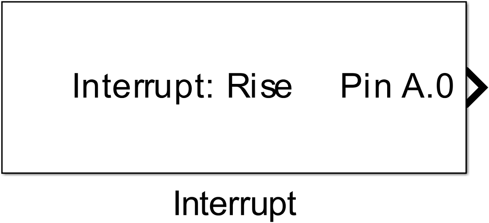
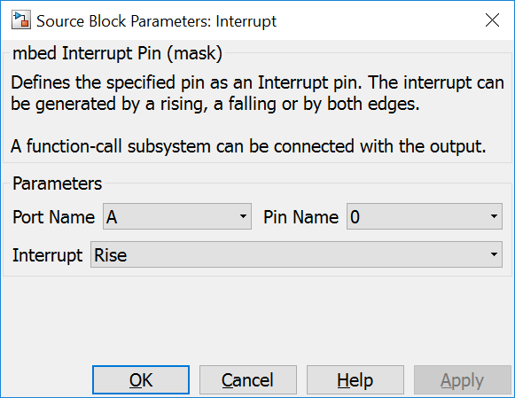
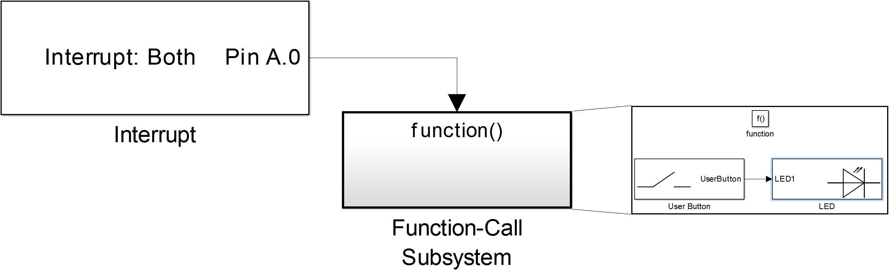

4.9. Interrupt
4.9.1. Description
Defines the specified pin as an Interrupt pin. The interrupt can be generated by a rising, a falling or by both edges. A connected function-call subsystem is executed when the interrupt occurs.
{kind=link}
4.9.2. Data Type Support
The output port has the function call data type.
4.9.3. Parameters Dialog Box
4.9.3.1. Port Name/Pin Number
specify the mcu pin. This block supports the naming schema: ‘P’ + letter ‘A’, ‘B’, ‘C’, … + ‘_’ + number ‘0’, ‘1’, … ‘15’, e.g. PA_0.
4.9.3.2. Sample Time
4.9.4. Example
In the example a digital input pin is configured as an interrupt pin. When an interrupt occurs the value of USER_BUTTON is written to LED1.
{kind=link}
4.9.5. Code Generation
Instance names of mbed classes are created by concatenating model name (, submodelnames) and block name (<Model Name>_(<Subblock Name>_…)<Block Name>). Space and minus characters are substituted by underscore (‘_’) characters.
4.9.5.1. Global parts
creates a global instance
InterruptIn <instance name>(P<Port Name>_<Pin Number>);
a function declaration
void <instance name>_interrupt();
and a function definition
void <instance name>_interrupt() {
...
}
4.9.5.2. Initialization Function
and some lines in void <Model Name>_initialize(void) function depending on Interrupt typ parameter:
%switch(nInterruptMode)
%case None
<instance name>.rise(NULL);
<instance name>.fall(NULL);
%break
%case Rise
<instance name>.rise(%<instance name>_interrupt);
%break
%case Fall
<instance name>.fall(%<instance name>_interrupt);
%break
%case Both
<instance name>.rise(%<instance name>_interrupt);
<instance name>.fall(%<instance name>_interrupt);
%break
%endswitch
in <Model Name>.cpp. The function <instance name>_interrupt() is called by the mbed interrupt system when the configured event occurs.